microgen.shape package
Shape.
Shape (microgen.shape)
- class microgen.shape.Box(dim: tuple[float, float, float] = (1, 1, 1), **kwargs: Vector3DType)
Bases:
ShapeClass to generate a box.
The implicit field is the canonical AABB SDF (
max(|x|-hx, |y|-hy, |z|-hz)decomposed into outside/inside parts), evaluated in the box’s local frame socenterandorientationtransform the field correctly. Set on every instance so boxes compose via|/&/-and stay usable without the[cad]extra (onlygenerate()requires CAD).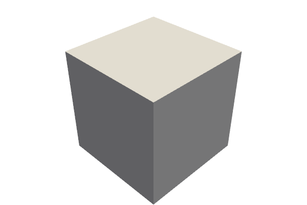
- generate(**_: KwargsGenerateType) CadShape
Generate a box CAD shape (OCCT). Requires the
[cad]extra.
- generate_vtk(level: int = 0, **_: KwargsGenerateType) pv.PolyData
Generate a box VTK shape using the given parameters.
- class microgen.shape.Capsule(height: float = 1, radius: float = 0.5, **kwargs: Vector3DType)
Bases:
ShapeClass to generate a capsule (cylinder with hemispherical ends).
Canonical frame: capsule axis along
+x, segment from(-height/2, 0, 0)to(+height/2, 0, 0), radiusradius. The implicit field is the point-to-segment distance minus radius (Inigo Quilez capsule SDF), evaluated in the local frame socenterandorientationtransform the field correctly. Set on every instance so capsules compose via|/&/-and stay usable without the[cad]extra (onlygenerate()requires CAD).
- generate(**_: KwargsGenerateType) CadShape
Generate a capsule CAD shape (OCCT). Requires the
[cad]extra.
- generate_vtk(resolution: int = 100, theta_resolution: int = 50, phi_resolution: int = 50, **_: KwargsGenerateType) pv.PolyData
Generate a capsule VTK shape using the given parameters.
- class microgen.shape.Cylinder(height: float = 1, radius: float = 0.5, **kwargs: Vector3DType)
Bases:
ShapeClass to generate a cylinder.
Canonical frame: cylinder axis along
+xfrom(-height/2, 0, 0)to(+height/2, 0, 0), radiusradius. The implicit field is a capped-cylinder SDF (radial + axial distance composition), evaluated in the local frame socenterandorientationtransform the field correctly. Set on every instance so cylinders compose via|/&/-and stay usable without the[cad]extra (onlygenerate()requires CAD).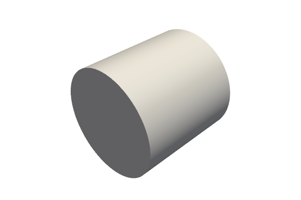
- generate(**_: KwargsGenerateType) CadShape
Generate a cylinder CAD shape (OCCT). Requires the
[cad]extra.
- generate_vtk(resolution: int = 100, **_: KwargsGenerateType) pv.PolyData
Generate a cylinder VTK shape using the given parameters.
- class microgen.shape.CylindricalTpms(radius: float, surface_function: Field, offset: float | OffsetGrading | Field | None = None, phase_shift: Sequence[float] = (0.0, 0.0, 0.0), cell_size: float | Sequence[float] = 1.0, repeat_cell: int | Sequence[int] = 1, center: Vector3DType = (0, 0, 0), orientation: Vector3DType = (0, 0, 0), resolution: int = 20, density: float | None = None)
Bases:
TpmsClass used to generate cylindrical TPMS geometries (sheet or skeletals parts).
- class microgen.shape.Ellipsoid(radii: tuple[float, float, float] = (1, 0.5, 0.25), **kwargs: Vector3DType)
Bases:
ShapeClass to generate an ellipsoid.
The implicit field is the canonical ellipsoid scalar
sqrt((x/rx)^2 + (y/ry)^2 + (z/rz)^2) - 1(approximate SDF with the correct zero-level set), evaluated in the local frame socenterandorientationtransform the field correctly. Set on every instance so ellipsoids compose via|/&/-and stay usable without the[cad]extra (onlygenerate()requires CAD).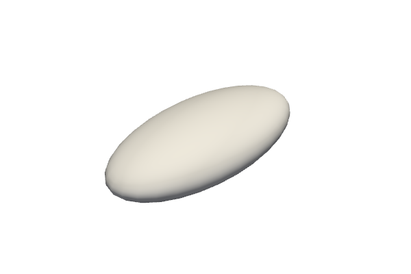
- generate(**_: KwargsGenerateType) CadShape
Generate an ellipsoid CAD shape (OCCT). Requires the
[cad]extra.
- generate_vtk(**_: KwargsGenerateType) pv.PolyData
Generate an ellipsoid VTK polydta using the given parameters.
- class microgen.shape.ExtrudedPolygon(list_corners: Sequence[tuple[float, float]] | None = None, height: float = 1, **kwargs: Vector3DType | dict[str, Sequence[tuple[float, float]]])
Bases:
ShapeExtrudedPolygon.
Class to generate an extruded polygon with a given list of points and a thickness

- generate(**_: KwargsGenerateType) CadShape
Generate an extruded polygon CAD shape (OCCT). Requires the
[cad]extra.
- generate_vtk(**_: KwargsGenerateType) pv.PolyData
Generate an extruded polygon VTK shape using the given parameters.
- class microgen.shape.Infill(obj: PolyData, surface_function: Callable[[ndarray[tuple[Any, ...], dtype[float64]], ndarray[tuple[Any, ...], dtype[float64]], ndarray[tuple[Any, ...], dtype[float64]]], ndarray[tuple[Any, ...], dtype[float64]]], offset: float | OffsetGrading | Callable[[ndarray[tuple[Any, ...], dtype[float64]], ndarray[tuple[Any, ...], dtype[float64]], ndarray[tuple[Any, ...], dtype[float64]]], ndarray[tuple[Any, ...], dtype[float64]]] | None = None, cell_size: float | Sequence[float] | ndarray[tuple[Any, ...], dtype[float64]] | None = None, repeat_cell: int | Sequence[int] | ndarray[tuple[Any, ...], dtype[int8]] | None = None, phase_shift: Sequence[float] = (0.0, 0.0, 0.0), resolution: int = 20, density: float | None = None)
Bases:
TpmsGenerate a TPMS infill inside a given object.
- property lower_skeletal: PolyData
Lower-skeletal part as a PolyData mesh.
- property sheet: PolyData
Sheet part as a PolyData mesh (uses
generate_vtk()).
- property upper_skeletal: PolyData
Upper-skeletal part as a PolyData mesh.
- class microgen.shape.NormedDistance(obj: PolyData, boundary_offset: float, furthest_offset: float, boundary_weight: float = 1.0)
Bases:
OffsetGradingCompute the offset based on the implicit distance to an object.
- compute_offset(grid: pv.UnstructuredGrid | pv.StructuredGrid) npt.NDArray[np.float64]
Compute the offset of the grid.
This method should compute the offset on each point of the grid and return it as a 1D array. The lower_surface and upper_surface fields of the grid will then be updated using this computed offset.
- Parameters:
grid (pv.UnstructuredGrid | pv.StructuredGrid) – The grid to compute the offset on.
- Returns:
The offset of the grid as a 1D array that matches the number of points in the grid.
- Return type:
npt.NDArray[np.float64]
- class microgen.shape.Polyhedron(dic: dict[str, list[Vertex | Face]] | None = None, **kwargs: Vector3DType)
Bases:
ShapeClass to generate a Polyhedron with a given set of faces and vertices.

- generate(**_: KwargsGenerateType) CadShape
Generate a polyhedron CAD shape (OCCT). Requires the
[cad]extra.
- generate_vtk(**_: KwargsGenerateType) pv.PolyData
Generate a polyhedron VTK shape using the given parameters.
- class microgen.shape.Shape(center: Vector3DType = (0, 0, 0), orientation: Vector3DType | Rotation = (0, 0, 0), func: Field | None = None, bounds: BoundsType | None = None)
Bases:
objectUnified shape with optional implicit (F-rep) and CAD representations.
Every shape has a
centerandorientation. It may also carry an implicit scalar field (_func) wheref(x, y, z) < 0means inside. When the implicit field is present, the defaultgenerate_vtk()andgenerate()produce geometry via marching cubes. Subclasses (e.g.Sphere,Tpms) override these methods with their own implementations.Boolean operators (
|,&,-,~) and smooth boolean methods operate on the implicit field and return a newShape.- Parameters:
center – center of the shape
orientation – orientation of the shape
func – implicit scalar field
(x, y, z) -> array, orNonebounds –
(xmin, xmax, ymin, ymax, zmin, zmax)orNone
- property bounds: tuple[float, float, float, float, float, float] | None
The bounding box
(xmin, xmax, ymin, ymax, zmin, zmax), orNone.
- evaluate(x: ndarray[tuple[Any, ...], dtype[float64]], y: ndarray[tuple[Any, ...], dtype[float64]], z: ndarray[tuple[Any, ...], dtype[float64]]) ndarray[tuple[Any, ...], dtype[float64]]
Evaluate the implicit scalar field at the given coordinates.
Coordinates are in the field’s local frame —
centerandorientationare NOT applied here (they only affect mesh output ingenerate_vtk()). Usetranslate()/rotate()to bake transforms into the field itself.- Parameters:
x – x coordinates
y – y coordinates
z – z coordinates
- Returns:
scalar field values (negative = inside)
- property func: Callable[[ndarray[tuple[Any, ...], dtype[float64]], ndarray[tuple[Any, ...], dtype[float64]], ndarray[tuple[Any, ...], dtype[float64]]], ndarray[tuple[Any, ...], dtype[float64]]] | None
The implicit scalar field, or
None.
- generate(bounds: BoundsType | None = None, resolution: int = 50, **_: KwargsGenerateType) CadShape
Generate a CAD shape.
The default implementation builds an OCCT tessellated BREP from the implicit-field VTK mesh, via
microgen.cad.mesh_to_shape()(singleTopoDS_Facecarrying aPoly_Triangulation). Subclasses override this with native primitive construction.Requires the optional
[cad]install extra (cadquery-ocp-novtk).- Parameters:
bounds –
(xmin, xmax, ymin, ymax, zmin, zmax)resolution – number of grid points per axis
- Returns:
microgen.cad.CadShapewrapping an OCCTTopoDS_Shell
- generate_vtk(bounds: BoundsType | None = None, resolution: int = 50, **_: KwargsGenerateType) pv.PolyData
Generate a VTK mesh of the shape.
The default implementation meshes the implicit field via marching cubes (
f < 0convention). Subclasses override this with their own geometry generation.- Parameters:
bounds –
(xmin, xmax, ymin, ymax, zmin, zmax)resolution – number of grid points per axis
- Returns:
triangulated surface mesh
- require_func() Callable[[ndarray[tuple[Any, ...], dtype[float64]], ndarray[tuple[Any, ...], dtype[float64]], ndarray[tuple[Any, ...], dtype[float64]]], ndarray[tuple[Any, ...], dtype[float64]]]
Return
_funcor raise if not set.
- class microgen.shape.Sphere(radius: float = 1, **kwargs: Vector3DType)
Bases:
ShapeClass to generate a sphere.
The implicit field
f(p) = ||p - center|| - radius(a true SDF, negative inside) is set on every instance so spheres compose with other shapes through|/&/-and stay usable when the[cad]extra is not installed (onlygenerate()requires CAD).
- generate(**_: KwargsGenerateType) CadShape
Generate a sphere CAD shape (OCCT). Requires the
[cad]extra.
- generate_vtk(theta_resolution: int = 50, phi_resolution: int = 50, **_: KwargsGenerateType) pv.PolyData
Generate a sphere VTK shape using the given parameters.
- class microgen.shape.SphericalTpms(radius: float, surface_function: Field, offset: float | OffsetGrading | Field | None = None, phase_shift: Sequence[float] = (0.0, 0.0, 0.0), cell_size: float | Sequence[float] = 1.0, repeat_cell: int | Sequence[int] = 1, center: Vector3DType = (0, 0, 0), orientation: Vector3DType = (0, 0, 0), resolution: int = 20, density: float | None = None)
Bases:
TpmsClass used to generate spherical TPMS geometries (sheet or skeletals parts).
- class microgen.shape.Spinodoid(k0: float = 30.0, bandwidth: float = 5.0, offset: float | None = None, density: float | None = None, anisotropy: Sequence[float] = (1.0, 1.0, 1.0), cell_size: float | Sequence[float] = 1.0, repeat_cell: int | Sequence[int] = 1, resolution: int = 32, mode_amplitude_threshold: float = 0.001, seed: int | None = None, center: Vector3DType = (0.0, 0.0, 0.0), orientation: Vector3DType = (0.0, 0.0, 0.0), **kwargs: Vector3DType)
Bases:
ShapeClass to generate a periodic Spinodoid microstructure.
Construction is in two stages:
Spectral: an FFT of filtered white noise yields a sparse set of reciprocal-lattice modes
(modes, amplitudes, phases)whose magnitudes survive a relative-amplitude threshold.Geometric: the iso-surface
f(x) = offsetdefines the solid (f(x) ≥ offsetis inside). Eitheroffsetordensitymust be given, mirroringmicrogen.Tpms:offset: the iso-value directly (a scalar in field units).density: target solid volume fraction in (0, 1); microgen finds theoffsetmatching this fraction via Monte Carlo on the F-rep callable.
The structured grid and
grid_solid/surfaceproperties are derived by sampling the callable on a(resolution+1)^3grid covering the full unit cell.
The implicit field
f(x) = Σᵢ Aᵢ cos(kᵢ·x + φᵢ) − offsetis bit-for-bit periodic oncell_size(everykᵢlives on the reciprocal lattice). Periodicity is an invariant — there is noperiodic=Trueflag.- Parameters:
k0 – dominant wave number (Gaussian shell center).
bandwidth – Gaussian shell width.
offset – iso-value defining the solid surface (mutually exclusive with
density).density – target solid volume fraction in (0, 1) (mutually exclusive with
offset).anisotropy –
(aₓ, a_y, a_z)axis-stretch factors applied to wavenumbers in the shell filterK_eff² = (aₓ Kₓ)² + ….cell_size – unit-cell side length(s); scalar or 3-tuple.
repeat_cell – integer tiling along each axis.
resolution – FFT grid resolution per cell (the structured grid will have
resolution + 1points per axis to cover both endpoints of the periodic cell exactly).mode_amplitude_threshold – keep FFT modes with
|F̂| > threshold * max(|F̂|).seed – RNG seed;
Nonefor non-deterministic behavior.center – geometry center after construction (translation applied in
generate_vtk()/generate()).orientation – rotation angles (Euler) applied at the end.
- generate(**_: KwargsGenerateType) CadShape
Generate an OCCT CAD shape (Solid or Compound) of the spinodoid.
Mirrors
microgen.Tpms.generate(): extracts the structured-grid surface, builds a closed multi-face periodic shell with planar BREP faces on the cell sides plus per-triangle planar faces on the spinodoid interior, and applies thecenter/orientationrigid transform. Spinodoids commonly decompose into multiple disjoint solid components — the return type may be a Compound of fused Solids.Requires the optional
[cad]install extra.
- generateVtk(**kwargs: KwargsGenerateType) pv.PolyData
Deprecated. Use
generate_vtk().
- generate_grid_vtk(**_: KwargsGenerateType) pv.UnstructuredGrid
Generate the volumetric solid grid (3D cells) with center+rotation applied.
- generate_vtk(**_: KwargsGenerateType) pv.PolyData
Generate the iso-surface as a PolyData with center+rotation applied.
- property grid: StructuredGrid
Return the structured-grid sampling of the implicit field.
- property grid_solid: UnstructuredGrid
Return the volumetric solid grid (cells where
f >= 0).
- property surface: PolyData
Return the iso-surface mesh of the spinodoid.
- class microgen.shape.Tpms(surface_function: Field, offset: float | OffsetGrading | Field | None = None, phase_shift: Sequence[float] = (0.0, 0.0, 0.0), cell_size: float | Sequence[float] = 1.0, repeat_cell: int | Sequence[int] = 1, resolution: int = 20, density: float | None = None, **kwargs: Vector3DType)
Bases:
ShapeTriply Periodical Minimal Surfaces.
Class to generate Triply Periodical Minimal Surfaces (TPMS) geometry from a given mathematical function, with given offset
- functions available :
- as_sheet(thickness: float | None = None) Shape
Return an F-rep Shape representing a TPMS sheet of given thickness.
Uses the SDF-normalized field, so thickness is in physical units. If thickness is
None, usesself.offset(which may be a scalar, an array sampled onself.grid, or a callable in which case the callable form is used directly).
- as_surface() Shape
Return F-rep Shape for the (open) zero-isosurface, no thickness.
Same field as
as_lower_skeletal(); meant fortype_part="surface". Marching cubes will produce an open shell — there is no enclosed volume.
- as_upper_skeletal() Shape
F-rep Shape for the upper skeletal:
{p : f(p) > offset/2}.Volume scales with the chosen offset (smaller offset ⇒ larger skeletal), matching the historical CadQuery behaviour and the VTK grid-clip path.
- generate(type_part: TpmsPartType = 'sheet', smoothing: int = 0, algo_resolution: int | None = None, **_: KwargsGenerateType) CadShape
Generate an OCCT CAD shape of the requested TPMS part.
Builds the periodic structured-grid mesh (same as
generate_vtk()) and converts it to an OCCT shell with planar BREP faces on the cell-boundary planes (one face per side, carrying its tessellation) plus per-triangle planar faces for the TPMS interior surface. This is the layout gmsh’ssetPeriodicexpects: it pairs opposite cell-side faces by their plane equation.Requires the optional
[cad]install extra (cadquery-ocp-novtk).- Parameters:
type_part –
"sheet","lower skeletal","upper skeletal"or"surface"(open zero-isosurface, no thickness)smoothing – Laplacian smoothing iterations on the boundary mesh (default 0; non-zero hurts strict periodicity)
algo_resolution – temporary-TPMS resolution for density→offset search (only used when
self.densityis set)
- Returns:
microgen.cad.CadShapewrapping an OCCTTopoDS_Shellwith 6 planar boundary faces + interior tessellation.
- generate_grid_vtk(type_part: TpmsPartType = 'sheet', algo_resolution: int | None = None, **_: KwargsGenerateType) pv.UnstructuredGrid
Generate VTK UnstructuredGrid object of the required TPMS part.
- generate_vtk(type_part: TpmsPartType = 'sheet', algo_resolution: int | None = None, **_: KwargsGenerateType) pv.PolyData
Generate the PyVista mesh of the requested TPMS part.
Same F-rep pipeline as
generate()(skeletals are clipped to the cell box), so the two outputs share the exact same triangulation and therefore the same volume.- Parameters:
type_part –
"sheet","lower skeletal","upper skeletal"or"surface"algo_resolution – temporary-TPMS resolution for density→offset search (only used when
self.densityis set)
- property grid_lower_skeletal: UnstructuredGrid
Return lower skeletal part.
- property grid_sheet: UnstructuredGrid
Return sheet part.
- property grid_upper_skeletal: UnstructuredGrid
Return upper skeletal part.
- property lower_skeletal: PolyData
Return lower skeletal part.
- property offset: float | ndarray[tuple[Any, ...], dtype[float64]] | None
Returns the offset value.
- classmethod offset_from_density(surface_function: Field, part_type: TpmsPartType, density: float, resolution: int = 20) float
Return the offset corresponding to the required density.
- Parameters:
surface_function – tpms function
part_type – type of the part (sheet, lower skeletal or upper skeletal)
density – Required density, 0.5 for 50%
resolution – resolution of the tpms used to compute the offset
- Returns:
corresponding offset value
- property raw_field: Callable[[ndarray[tuple[Any, ...], dtype[float64]], ndarray[tuple[Any, ...], dtype[float64]], ndarray[tuple[Any, ...], dtype[float64]]], ndarray[tuple[Any, ...], dtype[float64]]]
The raw (non-SDF-normalized) TPMS field callable.
- property sheet: PolyData
Return sheet part.
- property skeletals: tuple[PolyData, PolyData]
Returns both skeletal parts.
- property surface: PolyData
Returns isosurface f(x, y, z) = 0.
- property upper_skeletal: PolyData
Return upper skeletal part.
- microgen.shape.batch_smooth_union(shapes: list[Shape], k: float = 0.0) Shape
Combine many shapes with smooth union in a flat loop (no recursion).
This avoids the recursion-depth limit that arises when chaining hundreds of binary
smooth_unioncalls, each wrapping the previous in a lambda.
- microgen.shape.from_field(func: Field, bounds: BoundsType | None = None) Shape
Wrap any callable
f(x, y, z) -> scalaras a Shape with an implicit field.
- microgen.shape.new_geometry(shape: str, param_geom: dict[str, GeometryParameterType], center: tuple[float, float, float] = (0, 0, 0), orientation: tuple[float, float, float] = (0, 0, 0)) Shape
Create a new basic geometry with given shape and geometrical parameters.
- Parameters:
shape – name of the geometry
param_geom – dictionary with required geometrical parameters
center – center
orientation – orientation
- Return geometry:
Shape
Basic Geometry.
Basic Geometry (microgen.shape.shape)
- class microgen.shape.shape.Shape(center: Vector3DType = (0, 0, 0), orientation: Vector3DType | Rotation = (0, 0, 0), func: Field | None = None, bounds: BoundsType | None = None)
Bases:
objectUnified shape with optional implicit (F-rep) and CAD representations.
Every shape has a
centerandorientation. It may also carry an implicit scalar field (_func) wheref(x, y, z) < 0means inside. When the implicit field is present, the defaultgenerate_vtk()andgenerate()produce geometry via marching cubes. Subclasses (e.g.Sphere,Tpms) override these methods with their own implementations.Boolean operators (
|,&,-,~) and smooth boolean methods operate on the implicit field and return a newShape.- Parameters:
center – center of the shape
orientation – orientation of the shape
func – implicit scalar field
(x, y, z) -> array, orNonebounds –
(xmin, xmax, ymin, ymax, zmin, zmax)orNone
- property bounds: tuple[float, float, float, float, float, float] | None
The bounding box
(xmin, xmax, ymin, ymax, zmin, zmax), orNone.
- evaluate(x: ndarray[tuple[Any, ...], dtype[float64]], y: ndarray[tuple[Any, ...], dtype[float64]], z: ndarray[tuple[Any, ...], dtype[float64]]) ndarray[tuple[Any, ...], dtype[float64]]
Evaluate the implicit scalar field at the given coordinates.
Coordinates are in the field’s local frame —
centerandorientationare NOT applied here (they only affect mesh output ingenerate_vtk()). Usetranslate()/rotate()to bake transforms into the field itself.- Parameters:
x – x coordinates
y – y coordinates
z – z coordinates
- Returns:
scalar field values (negative = inside)
- property func: Callable[[ndarray[tuple[Any, ...], dtype[float64]], ndarray[tuple[Any, ...], dtype[float64]], ndarray[tuple[Any, ...], dtype[float64]]], ndarray[tuple[Any, ...], dtype[float64]]] | None
The implicit scalar field, or
None.
- generate(bounds: BoundsType | None = None, resolution: int = 50, **_: KwargsGenerateType) CadShape
Generate a CAD shape.
The default implementation builds an OCCT tessellated BREP from the implicit-field VTK mesh, via
microgen.cad.mesh_to_shape()(singleTopoDS_Facecarrying aPoly_Triangulation). Subclasses override this with native primitive construction.Requires the optional
[cad]install extra (cadquery-ocp-novtk).- Parameters:
bounds –
(xmin, xmax, ymin, ymax, zmin, zmax)resolution – number of grid points per axis
- Returns:
microgen.cad.CadShapewrapping an OCCTTopoDS_Shell
- generate_vtk(bounds: BoundsType | None = None, resolution: int = 50, **_: KwargsGenerateType) pv.PolyData
Generate a VTK mesh of the shape.
The default implementation meshes the implicit field via marching cubes (
f < 0convention). Subclasses override this with their own geometry generation.- Parameters:
bounds –
(xmin, xmax, ymin, ymax, zmin, zmax)resolution – number of grid points per axis
- Returns:
triangulated surface mesh
- require_func() Callable[[ndarray[tuple[Any, ...], dtype[float64]], ndarray[tuple[Any, ...], dtype[float64]], ndarray[tuple[Any, ...], dtype[float64]]], ndarray[tuple[Any, ...], dtype[float64]]]
Return
_funcor raise if not set.
- exception microgen.shape.shape.ShellCreationError
Bases:
ExceptionRaised when an OCCT shell cannot be created from a mesh.
Box.
Box (microgen.shape.box)
- class microgen.shape.box.Box(dim: tuple[float, float, float] = (1, 1, 1), **kwargs: Vector3DType)
Bases:
ShapeClass to generate a box.
The implicit field is the canonical AABB SDF (
max(|x|-hx, |y|-hy, |z|-hz)decomposed into outside/inside parts), evaluated in the box’s local frame socenterandorientationtransform the field correctly. Set on every instance so boxes compose via|/&/-and stay usable without the[cad]extra (onlygenerate()requires CAD).
- generate(**_: KwargsGenerateType) CadShape
Generate a box CAD shape (OCCT). Requires the
[cad]extra.
- generate_vtk(level: int = 0, **_: KwargsGenerateType) pv.PolyData
Generate a box VTK shape using the given parameters.
Capsule.
Capsule (microgen.shape.capsule)
- class microgen.shape.capsule.Capsule(height: float = 1, radius: float = 0.5, **kwargs: Vector3DType)
Bases:
ShapeClass to generate a capsule (cylinder with hemispherical ends).
Canonical frame: capsule axis along
+x, segment from(-height/2, 0, 0)to(+height/2, 0, 0), radiusradius. The implicit field is the point-to-segment distance minus radius (Inigo Quilez capsule SDF), evaluated in the local frame socenterandorientationtransform the field correctly. Set on every instance so capsules compose via|/&/-and stay usable without the[cad]extra (onlygenerate()requires CAD).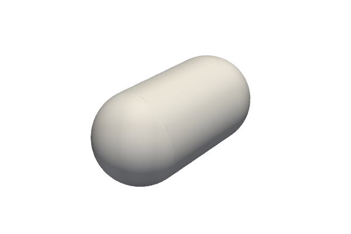
- generate(**_: KwargsGenerateType) CadShape
Generate a capsule CAD shape (OCCT). Requires the
[cad]extra.
- generate_vtk(resolution: int = 100, theta_resolution: int = 50, phi_resolution: int = 50, **_: KwargsGenerateType) pv.PolyData
Generate a capsule VTK shape using the given parameters.
Cylinder.
Cylinder (microgen.shape.cylinder)
- class microgen.shape.cylinder.Cylinder(height: float = 1, radius: float = 0.5, **kwargs: Vector3DType)
Bases:
ShapeClass to generate a cylinder.
Canonical frame: cylinder axis along
+xfrom(-height/2, 0, 0)to(+height/2, 0, 0), radiusradius. The implicit field is a capped-cylinder SDF (radial + axial distance composition), evaluated in the local frame socenterandorientationtransform the field correctly. Set on every instance so cylinders compose via|/&/-and stay usable without the[cad]extra (onlygenerate()requires CAD).
- generate(**_: KwargsGenerateType) CadShape
Generate a cylinder CAD shape (OCCT). Requires the
[cad]extra.
- generate_vtk(resolution: int = 100, **_: KwargsGenerateType) pv.PolyData
Generate a cylinder VTK shape using the given parameters.
Ellipsoid.
Ellipsoid (microgen.shape.ellipsoid)
- class microgen.shape.ellipsoid.Ellipsoid(radii: tuple[float, float, float] = (1, 0.5, 0.25), **kwargs: Vector3DType)
Bases:
ShapeClass to generate an ellipsoid.
The implicit field is the canonical ellipsoid scalar
sqrt((x/rx)^2 + (y/ry)^2 + (z/rz)^2) - 1(approximate SDF with the correct zero-level set), evaluated in the local frame socenterandorientationtransform the field correctly. Set on every instance so ellipsoids compose via|/&/-and stay usable without the[cad]extra (onlygenerate()requires CAD).
- generate(**_: KwargsGenerateType) CadShape
Generate an ellipsoid CAD shape (OCCT). Requires the
[cad]extra.
- generate_vtk(**_: KwargsGenerateType) pv.PolyData
Generate an ellipsoid VTK polydta using the given parameters.
Extruded Polygon.
Extruded Polygon (microgen.shape.extruded_polygon)
- class microgen.shape.extruded_polygon.ExtrudedPolygon(list_corners: Sequence[tuple[float, float]] | None = None, height: float = 1, **kwargs: Vector3DType | dict[str, Sequence[tuple[float, float]]])
Bases:
ShapeExtrudedPolygon.
Class to generate an extruded polygon with a given list of points and a thickness
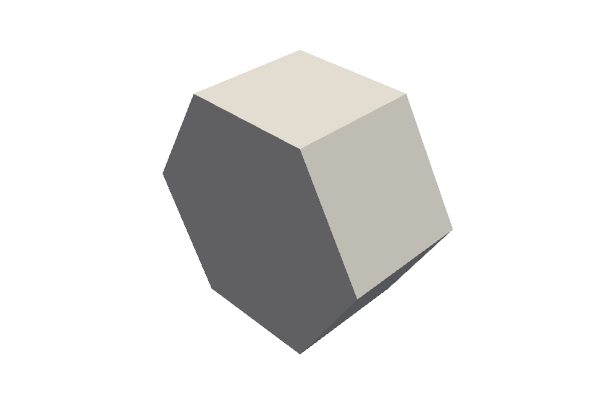
- generate(**_: KwargsGenerateType) CadShape
Generate an extruded polygon CAD shape (OCCT). Requires the
[cad]extra.
- generate_vtk(**_: KwargsGenerateType) pv.PolyData
Generate an extruded polygon VTK shape using the given parameters.
Polyhedron.
Polyhedron (microgen.shape.polyhedron)
- class microgen.shape.polyhedron.Polyhedron(dic: dict[str, list[Vertex | Face]] | None = None, **kwargs: Vector3DType)
Bases:
ShapeClass to generate a Polyhedron with a given set of faces and vertices.
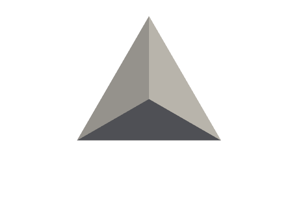
- generate(**_: KwargsGenerateType) CadShape
Generate a polyhedron CAD shape (OCCT). Requires the
[cad]extra.
- generate_vtk(**_: KwargsGenerateType) pv.PolyData
Generate a polyhedron VTK shape using the given parameters.
- microgen.shape.polyhedron.read_obj(filename: str) dict[str, list[tuple[float, float, float] | dict[str, list[int]]]]
Read vertices and faces from obj format file for polyhedron.
Sphere.
Sphere (microgen.shape.sphere)
- class microgen.shape.sphere.Sphere(radius: float = 1, **kwargs: Vector3DType)
Bases:
ShapeClass to generate a sphere.
The implicit field
f(p) = ||p - center|| - radius(a true SDF, negative inside) is set on every instance so spheres compose with other shapes through|/&/-and stay usable when the[cad]extra is not installed (onlygenerate()requires CAD).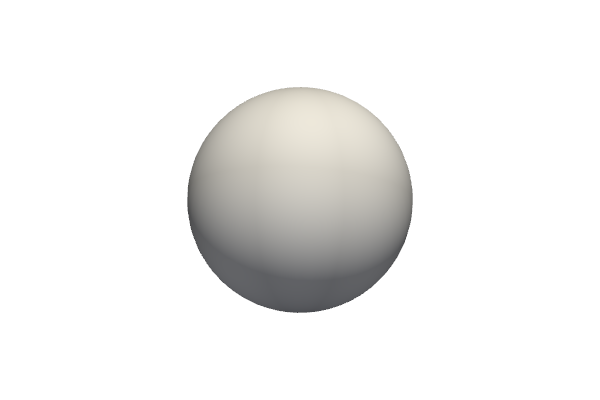
- generate(**_: KwargsGenerateType) CadShape
Generate a sphere CAD shape (OCCT). Requires the
[cad]extra.
- generate_vtk(theta_resolution: int = 50, phi_resolution: int = 50, **_: KwargsGenerateType) pv.PolyData
Generate a sphere VTK shape using the given parameters.
TPMS.
TPMS (microgen.shape.tpms)
- class microgen.shape.tpms.CylindricalTpms(radius: float, surface_function: Field, offset: float | OffsetGrading | Field | None = None, phase_shift: Sequence[float] = (0.0, 0.0, 0.0), cell_size: float | Sequence[float] = 1.0, repeat_cell: int | Sequence[int] = 1, center: Vector3DType = (0, 0, 0), orientation: Vector3DType = (0, 0, 0), resolution: int = 20, density: float | None = None)
Bases:
TpmsClass used to generate cylindrical TPMS geometries (sheet or skeletals parts).
- class microgen.shape.tpms.GradedInfill(obj: PolyData, surface_function: Callable[[ndarray[tuple[Any, ...], dtype[float64]], ndarray[tuple[Any, ...], dtype[float64]], ndarray[tuple[Any, ...], dtype[float64]]], ndarray[tuple[Any, ...], dtype[float64]]], offset_skin: float = 0.6, offset_core: float = 0.0, transition: float = 0.5, smoothness: float = 0.2, cell_size: float | Sequence[float] | ndarray[tuple[Any, ...], dtype[float64]] | None = None, repeat_cell: int | Sequence[int] | ndarray[tuple[Any, ...], dtype[int8]] | None = None, phase_shift: Sequence[float] = (0.0, 0.0, 0.0), resolution: int = 20)
Bases:
InfillCartesian TPMS infill with offset graded by distance to the envelope.
Same as
Infill(TPMS in the world cartesian frame, clipped by the input object), except the thickness of the TPMS sheet varies with the signed distance to the envelope.Default behaviour models a graded shell: dense material concentrated at the skin (
offset_skin = 0.6, “density 1”), hollowing out toward the core (offset_core = 0.0, “density 0”). Reverse the parameters for a dense-core / porous-skin scaffold.The cell pattern is still cartesian (axes-aligned gyroid) — only the sheet thickness varies in space — so the pattern tiles cleanly even on bunny-style envelopes with high-curvature features.
- class microgen.shape.tpms.Infill(obj: PolyData, surface_function: Callable[[ndarray[tuple[Any, ...], dtype[float64]], ndarray[tuple[Any, ...], dtype[float64]], ndarray[tuple[Any, ...], dtype[float64]]], ndarray[tuple[Any, ...], dtype[float64]]], offset: float | OffsetGrading | Callable[[ndarray[tuple[Any, ...], dtype[float64]], ndarray[tuple[Any, ...], dtype[float64]], ndarray[tuple[Any, ...], dtype[float64]]], ndarray[tuple[Any, ...], dtype[float64]]] | None = None, cell_size: float | Sequence[float] | ndarray[tuple[Any, ...], dtype[float64]] | None = None, repeat_cell: int | Sequence[int] | ndarray[tuple[Any, ...], dtype[int8]] | None = None, phase_shift: Sequence[float] = (0.0, 0.0, 0.0), resolution: int = 20, density: float | None = None)
Bases:
TpmsGenerate a TPMS infill inside a given object.
- property lower_skeletal: PolyData
Lower-skeletal part as a PolyData mesh.
- property sheet: PolyData
Sheet part as a PolyData mesh (uses
generate_vtk()).
- property upper_skeletal: PolyData
Upper-skeletal part as a PolyData mesh.
- exception microgen.shape.tpms.ShellCreationError
Bases:
ExceptionRaised when an OCCT shell cannot be created from a mesh.
- class microgen.shape.tpms.SphericalTpms(radius: float, surface_function: Field, offset: float | OffsetGrading | Field | None = None, phase_shift: Sequence[float] = (0.0, 0.0, 0.0), cell_size: float | Sequence[float] = 1.0, repeat_cell: int | Sequence[int] = 1, center: Vector3DType = (0, 0, 0), orientation: Vector3DType = (0, 0, 0), resolution: int = 20, density: float | None = None)
Bases:
TpmsClass used to generate spherical TPMS geometries (sheet or skeletals parts).
- class microgen.shape.tpms.Sweep(curve_points: npt.NDArray[np.float64] | Callable[[float], npt.NDArray[np.float64]], surface_function: Field, radial_max: float, offset: float | OffsetGrading | Field | None = None, cell_size: float | Sequence[float] | npt.NDArray[np.float64] = 1.0, repeat_cell: int | Sequence[int] | npt.NDArray[np.int8] = 1, phase_shift: Sequence[float] = (0.0, 0.0, 0.0), resolution: int = 20, density: float | None = None, seed_normal: Sequence[float] | None = None, n_curve_samples: int = 200, center: Vector3DType = (0, 0, 0), orientation: Vector3DType = (0, 0, 0))
Bases:
TpmsTPMS along an arbitrary 3D curve — generalisation of CylindricalTpms.
The TPMS is generated in a tube of radius
radial_maxaround an arbitrary curve, in local coordinates(s, r, θ)where:s= arc length along the curve from its startr= perpendicular distance from the curve at the closest pointθ= angle around the curve in the local tangent-frame plane
The local frame
(T, N, B)is built once at curve setup time using parallel transport along the polyline (tangent from finite differences, normal from a seed transported by Rodrigues rotation between adjacent samples; closed loops get a holonomy correction distributed linearly).The mesh is generated via the parametric structured-grid path (same as
CylindricalTpms/SphericalTpms): we build a structured grid in (s, r, θ) parametric space, evaluate the TPMS field on that grid, and map the parametric points to Cartesian using the parallel-transport frames.generate_vtkthen clips the structured grid by the relevant scalar threshold — much cleaner than F-rep MC at a uniform Cartesian resolution, which would under-sample the angular direction and produce dotted artefacts.CylindricalTpmsis a special case of this class (curve = a straight line).
- class microgen.shape.tpms.Tpms(surface_function: Field, offset: float | OffsetGrading | Field | None = None, phase_shift: Sequence[float] = (0.0, 0.0, 0.0), cell_size: float | Sequence[float] = 1.0, repeat_cell: int | Sequence[int] = 1, resolution: int = 20, density: float | None = None, **kwargs: Vector3DType)
Bases:
ShapeTriply Periodical Minimal Surfaces.
Class to generate Triply Periodical Minimal Surfaces (TPMS) geometry from a given mathematical function, with given offset
- functions available :
- as_sheet(thickness: float | None = None) Shape
Return an F-rep Shape representing a TPMS sheet of given thickness.
Uses the SDF-normalized field, so thickness is in physical units. If thickness is
None, usesself.offset(which may be a scalar, an array sampled onself.grid, or a callable in which case the callable form is used directly).
- as_surface() Shape
Return F-rep Shape for the (open) zero-isosurface, no thickness.
Same field as
as_lower_skeletal(); meant fortype_part="surface". Marching cubes will produce an open shell — there is no enclosed volume.
- as_upper_skeletal() Shape
F-rep Shape for the upper skeletal:
{p : f(p) > offset/2}.Volume scales with the chosen offset (smaller offset ⇒ larger skeletal), matching the historical CadQuery behaviour and the VTK grid-clip path.
- generate(type_part: TpmsPartType = 'sheet', smoothing: int = 0, algo_resolution: int | None = None, **_: KwargsGenerateType) CadShape
Generate an OCCT CAD shape of the requested TPMS part.
Builds the periodic structured-grid mesh (same as
generate_vtk()) and converts it to an OCCT shell with planar BREP faces on the cell-boundary planes (one face per side, carrying its tessellation) plus per-triangle planar faces for the TPMS interior surface. This is the layout gmsh’ssetPeriodicexpects: it pairs opposite cell-side faces by their plane equation.Requires the optional
[cad]install extra (cadquery-ocp-novtk).- Parameters:
type_part –
"sheet","lower skeletal","upper skeletal"or"surface"(open zero-isosurface, no thickness)smoothing – Laplacian smoothing iterations on the boundary mesh (default 0; non-zero hurts strict periodicity)
algo_resolution – temporary-TPMS resolution for density→offset search (only used when
self.densityis set)
- Returns:
microgen.cad.CadShapewrapping an OCCTTopoDS_Shellwith 6 planar boundary faces + interior tessellation.
- generate_grid_vtk(type_part: TpmsPartType = 'sheet', algo_resolution: int | None = None, **_: KwargsGenerateType) pv.UnstructuredGrid
Generate VTK UnstructuredGrid object of the required TPMS part.
- generate_vtk(type_part: TpmsPartType = 'sheet', algo_resolution: int | None = None, **_: KwargsGenerateType) pv.PolyData
Generate the PyVista mesh of the requested TPMS part.
Same F-rep pipeline as
generate()(skeletals are clipped to the cell box), so the two outputs share the exact same triangulation and therefore the same volume.- Parameters:
type_part –
"sheet","lower skeletal","upper skeletal"or"surface"algo_resolution – temporary-TPMS resolution for density→offset search (only used when
self.densityis set)
- property grid_lower_skeletal: UnstructuredGrid
Return lower skeletal part.
- property grid_sheet: UnstructuredGrid
Return sheet part.
- property grid_upper_skeletal: UnstructuredGrid
Return upper skeletal part.
- property lower_skeletal: PolyData
Return lower skeletal part.
- property offset: float | ndarray[tuple[Any, ...], dtype[float64]] | None
Returns the offset value.
- classmethod offset_from_density(surface_function: Field, part_type: TpmsPartType, density: float, resolution: int = 20) float
Return the offset corresponding to the required density.
- Parameters:
surface_function – tpms function
part_type – type of the part (sheet, lower skeletal or upper skeletal)
density – Required density, 0.5 for 50%
resolution – resolution of the tpms used to compute the offset
- Returns:
corresponding offset value
- property raw_field: Callable[[ndarray[tuple[Any, ...], dtype[float64]], ndarray[tuple[Any, ...], dtype[float64]], ndarray[tuple[Any, ...], dtype[float64]]], ndarray[tuple[Any, ...], dtype[float64]]]
The raw (non-SDF-normalized) TPMS field callable.
- property sheet: PolyData
Return sheet part.
- property skeletals: tuple[PolyData, PolyData]
Returns both skeletal parts.
- property surface: PolyData
Returns isosurface f(x, y, z) = 0.
- property upper_skeletal: PolyData
Return upper skeletal part.
F-rep Implicit Operations.
Implicit Operations (microgen.shape.implicit_ops)
Module-level boolean, blending, and utility operations for shapes
that carry an implicit scalar field (_func). All functions accept
and return Shape instances.
- microgen.shape.implicit_ops.batch_smooth_union(shapes: list[Shape], k: float = 0.0) Shape
Combine many shapes with smooth union in a flat loop (no recursion).
This avoids the recursion-depth limit that arises when chaining hundreds of binary
smooth_unioncalls, each wrapping the previous in a lambda.
- microgen.shape.implicit_ops.blend(a: Shape, b: Shape, factor: float = 0.5) Shape
Linear interpolation between two fields:
(1-t)*a + t*b.
- microgen.shape.implicit_ops.box(dims: tuple[float, float, float], center: tuple[float, float, float] = (0.0, 0.0, 0.0)) Shape
Axis-aligned box as an F-rep Shape.
SDF formula
max(|x-cx|-hx, |y-cy|-hy, |z-cz|-hz): signed distance to the box surface (negative inside, positive outside, zero on the surface). Useful as a clipping primitive — e.g.intersection(skeletal, box(...))bounds an unbounded TPMS skeletal field to a single cell.- Parameters:
dims – full side lengths
(dx, dy, dz)center – box center (default origin)
- Returns:
Shapecarrying the box SDF
- microgen.shape.implicit_ops.complement(a: Shape) Shape
Complement (negate the field): inside becomes outside and vice versa.
- microgen.shape.implicit_ops.difference(a: Shape, b: Shape) Shape
Difference of two shapes (a minus b).
- microgen.shape.implicit_ops.from_field(func: Field, bounds: BoundsType | None = None) Shape
Wrap any callable
f(x, y, z) -> scalaras a Shape with an implicit field.
- microgen.shape.implicit_ops.intersection(a: Shape, b: Shape) Shape
Intersection of two shapes (hard boolean).
- microgen.shape.implicit_ops.normalize_to_sdf(shape: Shape, epsilon: float = 1e-10) Shape
Return a new Shape with gradient-normalized SDF field:
f / |nabla f|.Uses
autogradfor exact analytical gradients when the field function is differentiable throughautograd.numpy. Falls back to central finite differences otherwise.- Parameters:
shape – shape whose implicit field to normalize
epsilon – floor for gradient magnitude (avoids division by zero at saddle points)
- microgen.shape.implicit_ops.repeat(shape: Shape, spacing: tuple[float, float, float], k: float = 0.0) Shape
Infinite repetition via coordinate modulo.
- Parameters:
shape – unit cell shape to tile
spacing –
(sx, sy, sz)repetition period per axisk – smooth blending radius across cell boundaries. When
k > 0, the base field is evaluated at the 26 neighboring periodic images in addition to the current cell and all values are combined with smooth minimum, so that primitives from adjacent cells blend seamlessly. Whenk <= 0(default), a simple coordinate-modulo repetition is used (hard tiling).
- microgen.shape.implicit_ops.shell(shape: Shape, thickness: float | Field) Shape
Hollow shell:
|f(p)| - thickness(p) / 2.thicknessmay be a constant (scalar) or a callablethickness(x, y, z) -> arrayfor spatially-varying shells. Negative or zero thickness at a point yields no inclusion in the shell at that point.
- microgen.shape.implicit_ops.smooth_difference(a: Shape, b: Shape, k: float) Shape
Smooth difference (a minus b) with blending radius k.
- microgen.shape.implicit_ops.smooth_intersection(a: Shape, b: Shape, k: float) Shape
Smooth intersection with blending radius k.
- microgen.shape.implicit_ops.smooth_union(a: Shape, b: Shape, k: float) Shape
Smooth union with blending radius k.
TPMS surface functions.
- microgen.shape.surface_functions.fischer_koch_s(x: ndarray, y: ndarray, z: ndarray) ndarray
Fischer-Koch S.
\[cos(2 x) sin(y) cos(z) + cos(x) cos(2 y) sin(z) + sin(x) cos(y) cos(2 z) = 0\]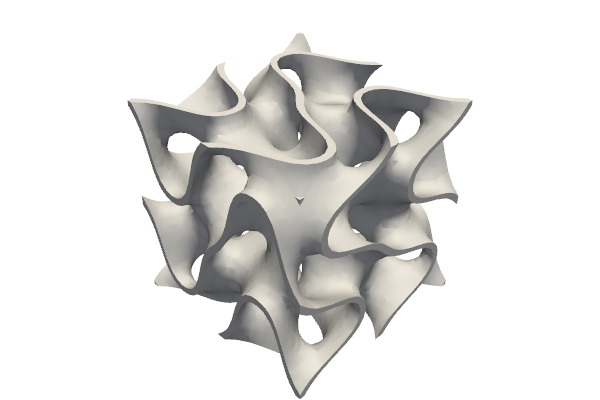
- microgen.shape.surface_functions.gyroid(x: ndarray, y: ndarray, z: ndarray) ndarray
Gyroid.
\[sin(x) cos(y) + sin(y) cos(z) + sin(z) cos(x) = 0\]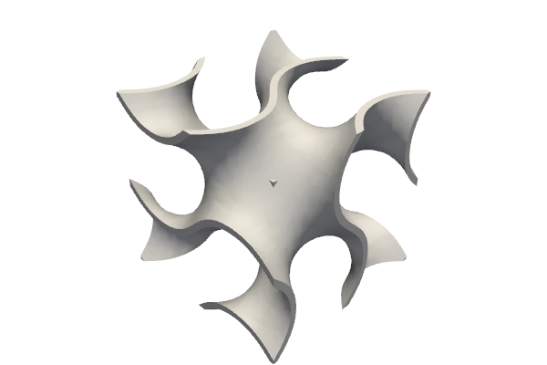
- microgen.shape.surface_functions.honeycomb(x: ndarray, y: ndarray, z: ndarray) ndarray
Honneycomb.
\[sin(x) cos(y) + sin(y) + cos(z) = 0\]
- microgen.shape.surface_functions.honeycomb_gyroid(x: float, y: float, _: float) float
Honeycomb Gyroid.
\[sin(x) cos(y) + sin(y) + cos(x) = 0\]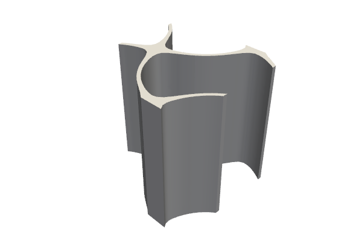
- microgen.shape.surface_functions.honeycomb_lidinoid(x: float, y: float, _: float) float
Honeycomb Lidinoid.
\[1.1 (sin(2 x) cos(y) + sin(2 y) sin(x) + cos(x) sin(y)) - (cos(2 x) cos(2 y) + cos(2 y) + cos(2 x)) = 0\]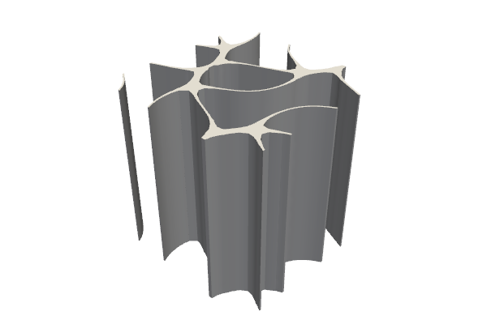
- microgen.shape.surface_functions.honeycomb_schoen_iwp(x: float, y: float, _: float) float
Honneycomb Schoen IWP.
\[cos(x) cos(y) + cos(y) + cos(x) = 0\]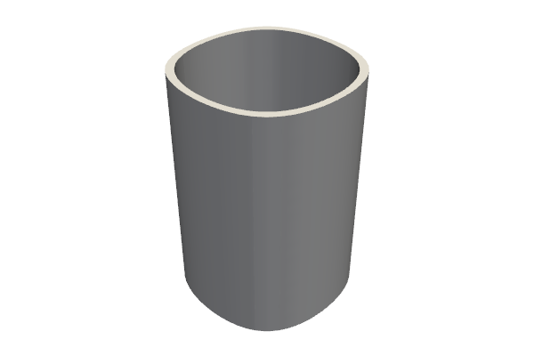
- microgen.shape.surface_functions.honeycomb_schwarz_d(x: float, y: float, _: float) float
Honneycomb Schwarz D.
\[cos(x) cos(y) + sin(x) sin(y) + sin(x) cos(y) + cos(x) sin(y) = 0\]
- microgen.shape.surface_functions.honeycomb_schwarz_p(x: float, y: float, _: float) float
Honeycomb Schwarz P.
\[cos(x) + cos(y) = 0\]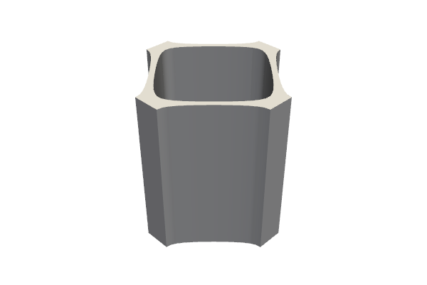
- microgen.shape.surface_functions.lidinoid(x: ndarray, y: ndarray, z: ndarray) ndarray
Lidinoid.
\[0.5 (sin(2 x) cos(y) sin(z) + sin(2 y) cos(z) sin(x) + sin(2 z) cos(x) sin(y)) - 0.5 (cos(2 x) cos(2 y) + cos(2 y) cos(2 z) + cos(2 z) cos(2 x)) + 0.3 = 0\]
- microgen.shape.surface_functions.neovius(x: ndarray, y: ndarray, z: ndarray) ndarray
Neovius.
\[3 cos(x) + cos(y) + cos(z) + 4 cos(x) cos(y) cos(z) = 0\]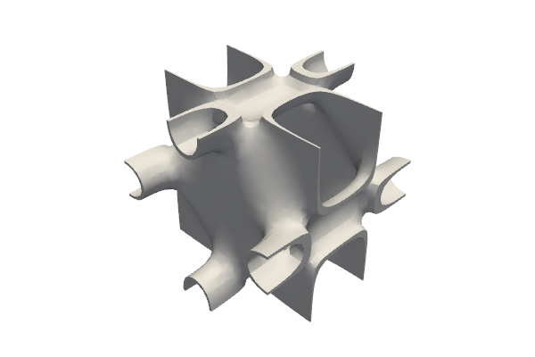
- microgen.shape.surface_functions.pmy(x: ndarray, y: ndarray, z: ndarray) ndarray
PMY.
\[2 cos(x) cos(y) cos(z) + sin(2 x) sin(y) + sin(x) sin(2 z) + sin(2 y) sin(z) = 0\]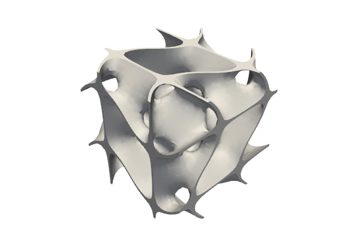
- microgen.shape.surface_functions.schoen_frd(x: ndarray, y: ndarray, z: ndarray) ndarray
Schoen FRD.
\[4 cos(x) cos(y) cos(z) - (cos(2 x) cos(2 y) + cos(2 y) cos(2 z) + cos(2 z) cos(2 x)) = 0\]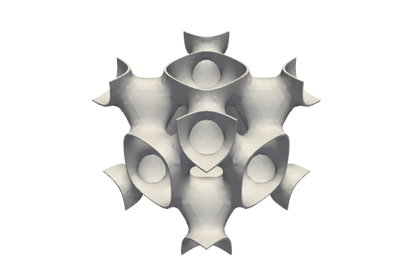
- microgen.shape.surface_functions.schoen_iwp(x: ndarray, y: ndarray, z: ndarray) ndarray
Schoen IWP.
\[2 (cos(x) cos(y) + cos(y) cos(z) + cos(z) cos(x)) - (cos(2 x) + cos(2 y) + cos(2 z)) = 0\]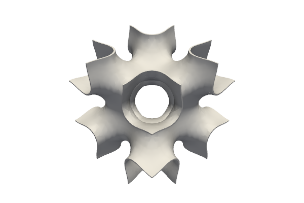
- microgen.shape.surface_functions.schwarz_d(x: ndarray, y: ndarray, z: ndarray) ndarray
Schwarz D.
\[sin(x) sin(y) sin(z) + sin(x) cos(y) cos(z) + cos(x) sin(y) cos(z) + cos(x) cos(y) sin(z) = 0\]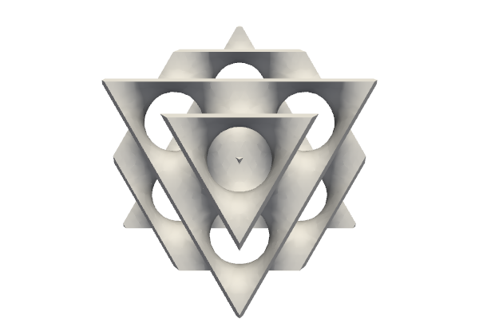
- microgen.shape.surface_functions.schwarz_p(x: ndarray, y: ndarray, z: ndarray) ndarray
Schwarz P.
\[cos(x) + cos(y) + cos(z) = 0\]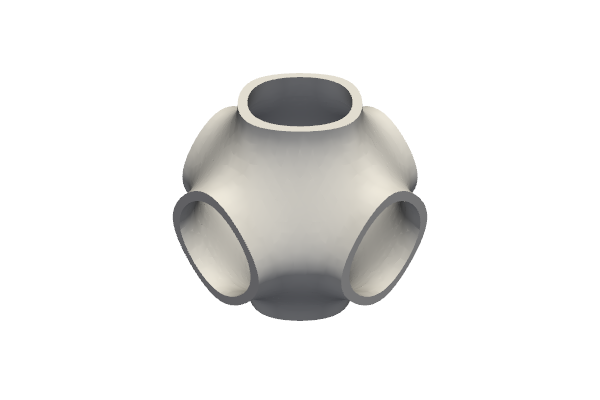
- microgen.shape.surface_functions.split_p(x: ndarray, y: ndarray, z: ndarray) ndarray
Split P.
\[1.1 (sin(2 x) cos(y) sin(z) + sin(2 y) cos(z) sin(x) + sin(2 z) cos(x) sin(y)) - 0.2 (cos(2 x) cos(2 y) + cos(2 y) cos(2 z) + cos(2 z) cos(2 x)) - 0.4 (cos(2 x) + cos(2 y) + cos(2 z)) = 0\]